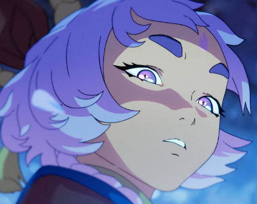

PROXIMO EVENTO: FLOR ESPIRITUAL DE JONIA
El primer acto empezará el 30 de Abril de 2025.
Sinopsis
Festivales de la Flor Espiritual Jónica, así como una posible vida después de la muerte en los mitos jónicos.El Festival de la Flor Espiritual es un tiempo antiguo y celebrado en Ionia, cuando se abre la puerta al mundo de los espíritus,
los muertos regresan a sus seres queridos, y los espíritus de toda clase dirigen su mirada hacia los vivos.
Desde el benevolente Kanmei hasta el obsesivo Akana, sus historias se repiten una y otra vez,
como sombras en una linterna de papel.
Esta temporada gira entorno a Jonia y el Florecer espiritual.
En League of Legends, la temporada presenta el lanzamiento de:
Un ícono que representa a Yunara el nuevo campeon de esta temporada 
Y la Grieta del Invocador con temática de Florecer Espiritual.
Los modos de juego disponibles incluyen:
Lanzaremos un nuevo modo de juego: ¡Pelea!
ACTO 1
DESCUBRE LOS ASPECTOS MAS ESPERADOS!
PINCHA Y DESCUBRELO

PINCHA Y DESCUBRELO

PINCHA Y DESCUBRELO

CAMPEONES
Yunara
UNIVERSO TEMATICO
- Florecer Espiritual
- Ashe Florecer Espiritual
- Irelia Florecer Espiritual
- Bardo Florecer Espiritual
- Varus Florecer Espiritual
- Zyra Florecer Espiritual
- Ivern Florecer Espiritual
- Yunara Florecer Espiritual
- Lux Florecer Espiritual de Prestigio